浮点数的表示与运算
[toc]
浮点数的表示
浮点数表示法是指以适当的形式将比例因子表示在数据中，让小数点的位置根据需要而浮动。这样，在位数有限的情况下，既扩大了数的表示范围，又保持了数的有效精度。例如，用定点数表示电子的质量（）或太阳的质量（）是非常不方便的。
浮点数的表示格式
通常，浮点数表示为：
式中，取值或，用来决定浮点数的符号；是一个二进制定点小数，称为尾数，一般用定点原码小数表示；是一个二进制定点整数，称为阶码或指数，用移码表示。是基数（隐含），可以约定为、、等。可见浮点数由符号、尾数和阶码三部分组成。
图2.9是一个32位短浮点数格式的例子。
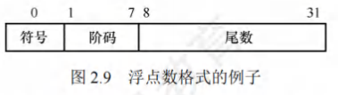
其中，第位为符号；第～位为移码表示的阶码（偏置值为）；第～位为位二进制原码小数表示的尾数；基数为。阶码的值反映浮点数的小数点的实际位置；阶码的位数反映浮点数的表示范围；尾数的位数反映浮点数的精度。
浮点数的表示范围
原码是关于原点对称的，故浮点数的范围也是关于原点对称的，如图2.10所示。
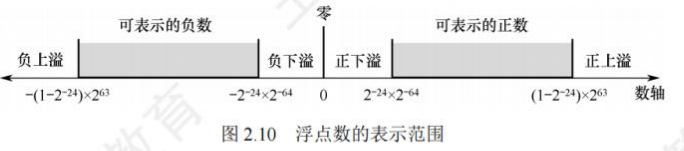
运算结果大于最大正数时称为正上溢，小于绝对值最大负数时称为负上溢，正上溢和负上溢统称上溢。数据一旦产生上溢，计算机必须中断运算操作，进行溢出处理。当运算结果在至最小正数之间时称为正下溢，在至绝对值最小负数之间时称为负下溢，正下溢和负下溢统称下溢。数据下溢时，浮点数值趋于零，计算机将其当作机器零处理。
浮点数的规格化
为了在浮点数运算过程中尽可能多地保留有效数字的位数，使有效数字尽量占满尾数数位，必须在运算过程中对浮点数进行规格化操作。所谓规格化操作，是指通过调整一个非规格化浮点数的尾数和阶码的大小，使非零浮点数在尾数的最高数位上保证是一个有效值。
- 左规：当运算结果的尾数的最高数位不是有效位，即出现的形式时，需要进行左规。左规时，尾数每左移一位、阶码减（基数为时）。左规可能要进行多次。
- 右规：当运算结果的尾数的有效位进到小数点前面时，需要进行右规，右规只需进行一次。将尾数右移一位、阶码加（基数为时）。右规时，阶码增加可能导致溢出。
基数为的原码规格化尾数应满足，形式如下：
- 正数为的形式，最大值为，最小值为，表示范围为；
- 负数为的形式，最大值为，最小值为，表示范围为。
基数不同，浮点数的规格化形式也不同。当浮点数尾数的基数为时，原码规格化数的尾数的尾数最高位一定是。当基数为时，原码规格化数的尾数最高两位不全为。
IEEE754标准
按照IEEE 754标准，常用的浮点数的格式如图2.11所示。
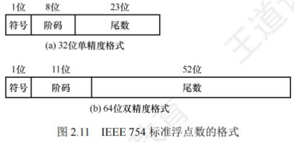
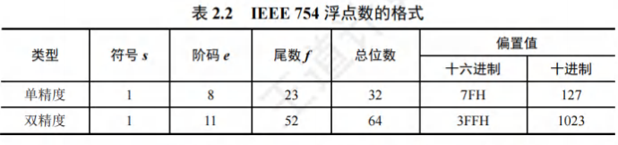
-
IEEE754标准规定常用的浮点数格式有位单精度浮点数（短浮点数、float型）和位双精度浮点数（长浮点数、double型），其基数隐含为，见表2.2。
-
单精度格式中包含位符号、位阶码和位尾数；
-
双精度格式包含位符号、位阶码和位尾数。基数隐含为；
-
尾数用原码表示。
-
对于规格化的二进制浮点数，尾数的最高位总是，为了能使尾数多表示一位有效位，将这个隐藏，称为隐藏位，因此位尾数实际表示了位有效数字。
-
在IEEE754标准中，指数用移码表示，但偏置值并不是通常位移码所用的，而是，因此，单精度和双精度浮点数的偏置值分别为和。在存储浮点数阶码之前，偏置值要先加到阶码真值上。
-
规格化单精度浮点数的真值为：
-
规格化双精度浮点数的真值为：
-
-
式中，规格化单精度浮点数的阶码的取值范围为～（位）；规格化双精度浮点数的阶码的取值范围为～（位）。IEEE754规格化浮点数的表示范围见表2.3。
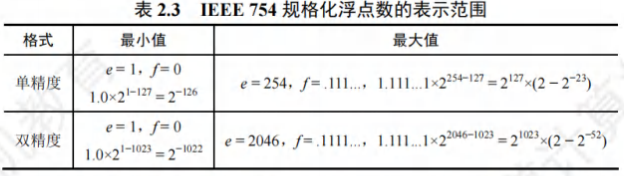
-
对于IEEE754格式的浮点数，阶码全为或全为时，有其特别的解释，如表2.4所示。
-
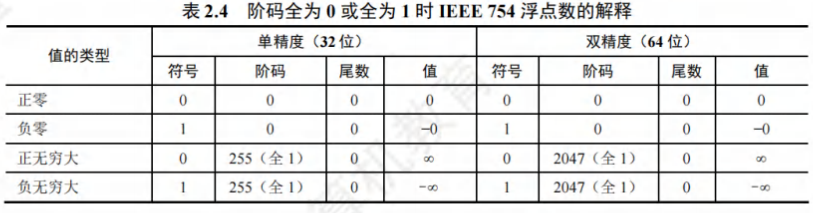
-
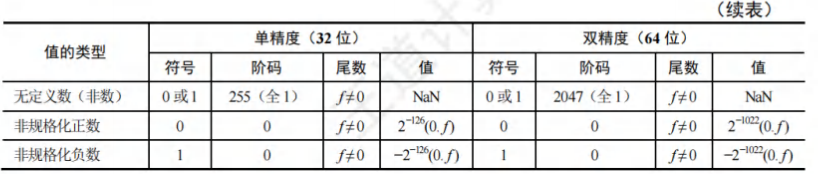
-
全阶码全尾数：。零的符号取决于符号，一般情况下和是等效的。
-
全阶码全尾数：。在数值上大于所有有限数，则小于所有有限数。引入无穷大数的目的是，在计算过程出现异常的情况下使得程序能继续进行下去。
-
全阶码非尾数：（Not a Number）。表示一个没有定义的数，称为非数。
-
全阶码非尾数：非规格化数。非规格化数的特点是阶码为全，尾数高位有一个或几个连续的，但不全为。因此，非规格化数的隐藏位为，且单精度和双精度浮点数的指数分别为或。非规格化数可以用于处理阶码下溢。
-
-
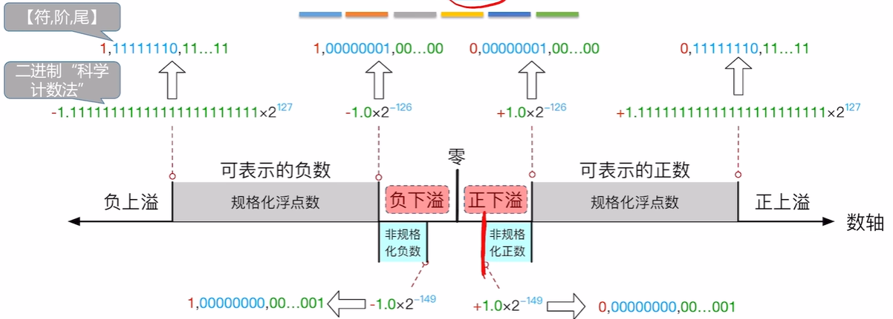
-
| 类型 | 符号位（S） | 阶码字段（E，8位） | 尾数字段（M，23位） | 二进制表示范围（完整32位结构） | 数值边界（二进制，近似值） |
|---|---|---|---|---|---|
| 规格化浮点数（正数） | 0 | 00000001 ~ 11111110 | 000…000 ~ 111…111 | 0 00000001 000…000 ~ 0 11111110 111…111 | 最小值：1.0×2⁻¹²⁶ 最大值：(2-2⁻²³)×2¹²⁷ |
| 规格化浮点数（负数） | 1 | 00000001 ~ 11111110 | 000…000 ~ 111…111 | 1 11111110 111…111 ~ 1 00000001 000…000 | 最小值：-(2-2⁻²³)×2¹²⁷ 最大值：-1.0×2⁻¹²⁶ |
| 非规格化浮点数（正数） | 0 | 00000000 | 000…001 ~ 111…111 | 0 00000000 000…001 ~ 0 00000000 111…111 | 最小值：1.0×2⁻¹⁴⁹ 最大值：(1-2⁻²³)×2⁻¹²⁶ |
| 非规格化浮点数（负数） | 1 | 00000000 | 000…001 ~ 111…111 | 1 00000000 111…111 ~ 1 00000000 000…001 | 最小值：-(1-2⁻²³)×2⁻¹²⁶ 最大值：-1.0×2⁻¹⁴⁹ |
【例2.5】将十进制数转换为IEEE754单精度浮点数格式表示。
解：
IEEE754规定：单精度浮点数的偏置值是；尾数最高位的“”是被隐藏的。
先将转换成二进制数，即，再计算阶码，，因此，转换成二进制数为。
IEEE754单精度浮点数格式：符号(1位)+阶码(8位)+尾数(23位)。因此，单精度格式表示为：
即
【例2.6】求IEEE754单精度浮点数的值是多少。
解：
先将按二进制展开为：
其对应IEEE754单精度浮点数的格式如下：
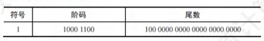
因此，符号表示负数；阶码值为；尾数值为（注意其有隐藏位，要加）。因此，浮点数的值为。
浮点数的加减运算
转换格式
使用补码表示阶码和尾数
对阶
小阶码向大阶码看齐，尾数每右移1位，阶码+1
- 求阶差： ，将结果转化为十进制
- 结果为负数：X阶数比Y阶数小
- 对阶：阶数小的尾数算数右移
尾数加减
将对阶后的尾数按定点原码小数的加(减)运算规则进行运算。因为IEEE754浮点数尾数中有一个隐藏位，因此在进行尾数加减时，必须将隐藏位还原到尾数部分。运算后的尾数不一定是规格化的，因此，浮点数的加减运算需要进一步进行规格化处理。
尾数规格化
- 右规：当结果尾数溢出(尾数符号位两数不同)时，需要进行右规。尾数右移一位，阶码加。尾数右移时，最高位被移到小数点前一位作为隐藏位，最后一位移出时，要考虑舍入。
- 左规：当结果尾数的最高位为 0时，需要进行左规。尾数每左移一位，阶码减。可能需要左规多次，直到将第一位移到小数点左边。
舍入
在对阶和尾数右规时，可能会对尾数进行右移，为保证运算精度，一般将移出的部分低位保留下来，参加中间过程的运算，最后再将运算结果进行舍入，还原表示成IEEE754格式。
IEEE754提供了以下种可选的舍入模式。
- 就近舍入：舍入为最近的可表示数。当运算结果是两个可表示数的非中间值时，实际上是“舍入”方式（类似于十进制的“四舍五入”法）；当运算结果正好在两个可表示数的中间时，则选择结果为偶数。
- 正向舍入：朝数轴方向舍入，即取右边最近的可表示数。
- 负向舍入：朝数轴方向舍入，即取左边最近的可表示数。
- 截断法：直接截取所需位数，丢弃后面的所有位，这种舍入处理最简单。对正数或负数来说，都是取更接近原点的那个可表示数，是一种趋向原点的舍入。
溢出判断
在尾数规格化和尾数舍入时，可能会对结果的阶码执行加/减运算。因此，必须考虑指数溢出问题。若一个正指数超过了最大允许值（或），则发生指数上溢，产生异常。若一个负指数超过了最小允许值（或），则发生指数下溢，通常把结果按机器零处理。
- 右规和尾数舍入：数值很大的尾数舍入时，可能因为末位加而发生尾数溢出，此时需要通过右规来调整尾数和阶码。右规时阶码加，导致阶码增大，因此需要判断是否发生了指数上溢。当调整前的阶码为时，加后，会变成而发生指数上溢。
- 左规：左规时阶码减，导致阶码减小，因此需要判断是否发生了指数下溢。其判断规则与指数上溢类似，左规一次，阶码减，然后判断阶码是否为全来确定指数是否下溢。
由此可见，浮点数的溢出并不是以尾数溢出来判断的，尾数溢出可以通过右规操作得到纠正。运算结果是否溢出主要看结果的指数是否发生了上溢，因此是由指数上溢来判断的。
某些题目中可能会指定尾数或阶码采用补码表示。通常可以采用双符号位，当尾数求和结果溢出（如尾数为或）时，需右规一次；当结果出现或时，需要左规，直到尾数变为或。
C语言中的浮点数类型
-
C语言中的
float型和double型分别对应于IEEE 754单精度浮点数和双精度浮点数。long double型对应于扩展双精度浮点数，但long double型的长度和格式随编译器和处理器类型的不同而有所不同。
-
在C程序中，等式的赋值和判断会导致强制类型转换，以
char→int→long→double和float→double最为常见，从前到后范围和精度都从小到大，转换过程没有损失。 -
不同类型数的混合运算时，遵循的原则是“类型提升”，即较低类型转换为较高类型。
- 所有这些转换都是系统自动进行的，这种转换称为隐式类型转换。
int型转换为float型时，虽然不会发生溢出，但float型尾数连隐藏位共位，当int型数的第～位非时，无法精确转换成位浮点数的尾数，需舍入处理，影响精度。double型转换为float型时，因float型的表示范围更小，因此大数转换时可能会发生溢出。此外，由于尾数有效位数变少，因此高精度数转换时会发生舍入。
-
float型或double型转换为int型时，因int型没有小数部分，因此数据会向方向截断（仅保留整数部分），发生舍入。另外，因int型的表示范围更小，因此大数转换时可能会溢出。
在不同数据类型之间转换时，往往隐藏着一些不容易察觉的错误，编程时要非常小心。
数据的大小端和对其存储
数据的"大端方式"和"小端方式"存储
-
在存储数据时，数据从低位到高位可以有不同的排列方式，通常用最低有效字节(LSB)和最高有效字节(MSB)来分别表示数据的低位和高位。
- 例如，在32位计算机中，一个int型变量i的机器数为01234567H，其最高有效字节MSB = 01H，最低有效字节LSB = 67H。
-
现代计算机基本都采用字节编址，即每个地址编号中存放1字节。不同类型的数据占用的字节数不同，如int型和float型占4字节，double型占8字节等，而程序中对每个数据只给定一个地址。
-
假设变量i的地址为0800H，字节01H、23H、45H、67H应各有一个内存地址，那么4字节在内存中应如何排列呢？根据数据中各字节在连续字节序列中的排列顺序不同，可以采用两种排列方式：大端方式(big endian)和小端方式(little endian)，如图2.12所示。
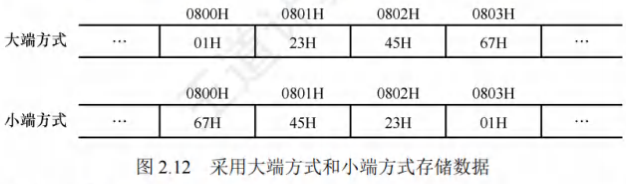
- 大端方式：先存储高位字节，后存储低位字节。字中的字节顺序和原序列的相同。
- 小端方式：先存储低位字节，后存储高位字节。字中的字节顺序和原序列的相反。
在检查底层机器级代码时，需要分清各类型数据字节序列的顺序，例如，以下是由反汇编器(汇编的逆过程，即将机器代码转换为汇编代码)生成的一行机器级代码的文本表示：
1 | |
其中，"4004d3"是十六进制数表示的地址，01 05 64 94 04 08是指令的机器代码，add eax, 0x8049464是指令的汇编形式，该指令的第二个操作数是一个立即数0x8049464。执行指令时，从指令代码的后4字节中取出该立即数，立即数存放的字节序列为64H、94H、04H、08H，正好与操作数的字节顺序相反，即采用的是小端方式存储，得到08049464H，去掉开头的0，得到值0x8049464，在阅读以小端方式存储的机器代码时，要注意字节是按相反顺序显示的。
数据按"边界对齐"方式存储
- 现代计算机都是按字节编址的，假设字长为32位，数据按边界对齐方式存放要求其存储地址是自身大小的整数倍，半字地址一定是2的整数倍，字地址一定是4的整数倍，这样无论所取的数据是字节、半字还是字，均可一次访存取出。
- 当所存数据不满足上述要求时，可通过填充空白字节使其符合要求。这样做虽然会浪费一些存储空间，但可以提高存取数据的速度。
- 当数据不按边界对齐方式存储时，半字长或字长的数据可能在两个存储字中，此时需要两次访存，并对高低字节的位置进行调整后才能得到所需数据，从而影响了系统的效率。
例如，按边界对齐方式和按边界不对齐方式存储时，格式分别如图2.13和图2.14所示。
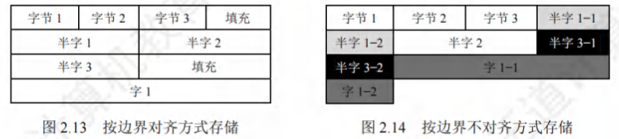
在C语言的struct类型中，"边界对齐"有两个重要要求：
- 每个成员按其类型的大小对齐，char型的对齐值为1，short型的对齐值为2，int型的对齐值为4，单位为字节；
- struct的长度必须是成员中最大对齐值的整数倍(不够就补空字节)。这样就能保证struct数组的每项都满足边界对齐的条件。
先来看两个例子(32位，x86环境，GCC编译器)：
1 | |
结果却是：sizeof(A)=8，sizeof(B)=12。
之所以出现上面的结果，是因为编译器要使结构体成员在空间上对齐。为此必须满足：
- 每个成员存储的"起始地址%该成员的长度 = 0"，而结构体中的成员都是按定义的先后顺序排放的。
- 结构体的长度也必须是最大成员长度的整数倍，即结构体也要对齐排放。
边界对齐方式相对边界不对齐方式是一种空间换时间的思想。精简指令系统计算机RISC通常采用边界对齐方式，因为边界对齐方式取指令时间相同，因此能适应指令流水。